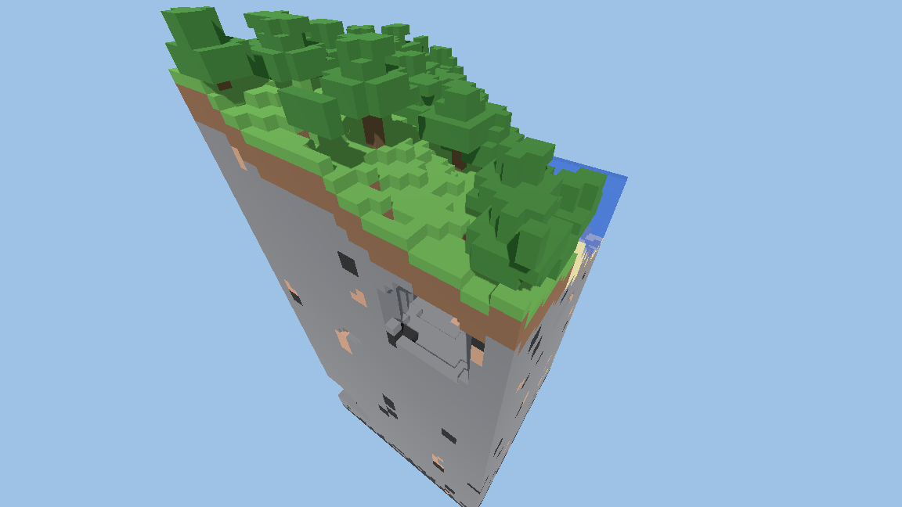

"world" · SHADW Terrain
Make the world from a seed
Name a map type and a seed in shadw.game.json. Terrain generates the map, the suite locks it, and Godot gets a scene it can load.
What it does for a game
shadw game worldwritesworld/<game>.map.json, an SVG preview andworld.lock.jsonwith the map's content hash.shadw game world --checkregenerates the map and fails if the hash moved, so a Terrain change that alters your world is caught before it ships.gameplay.spawnCountasks for up to 8 spawns;validaterefuses a server with more seats than spawns.- For Godot it writes a scene with one
ShadwMapnode: a tile layer with collision on water and walls, and a marker per spawn and structure. - Terrain's 3D voxel worlds import into Godot too (a
ShadwVoxelWorldnode); not yet wired intoshadw game world.

coastal_outpost, seed 7, 96×96. Godot 4.7.2 loads it as 9,216 tiles, 1,309 blocking, 8 spawns and 24 structures.The section of the file it fills
"world": { "generator": "tactical-maps", "params": { "mapType": "coastal_outpost", "seed": 7, "width": 96, "height": 96, "gameplay": { "spawnCount": 8, "minimumSpawnDistance": 16 } } }
The parameters are Terrain's own; the suite checks them with Terrain's validator and adds no schema of its own below them.
A 3D world, too

Not built yet
Open sea for sailing games, chunk by chunk. A map type with open water on every border, so a shared world can be generated a chunk at a time as players explore, was added to Terrain on 31 October 2026 and is not yet wired into the suite or a game. Voxel chunk streaming and editing are not built.
More on Terrain itself: shadw-terrain.shadw.app.